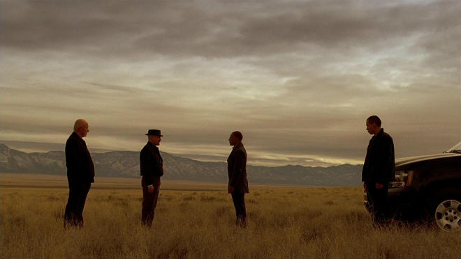
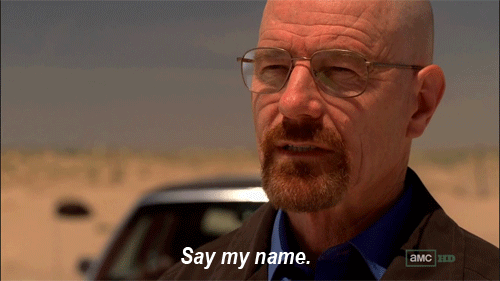
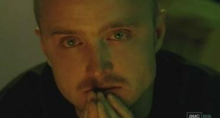

plankog KULTÚRA augusztus 21., 20:08
A második szezon első részét 2,9 millióan nézték meg. Az utolsó szezon első részét 5,9 millióan (amiben persze a letöltők nincsenek benne). Az összesített kritikusi értékelés szezonról szezonra kúszott feljebb , már bőven a túlértékelés-gyanús zónába. És ez nem véletlen. A sorozat dinamikáját adó jellemfejlődés (vagy éppen bukás) fokozatosan válik annyival komplexebbé és több rétegűvé, hogy a végére már bőven túlmutat egy átlagos sorozat keretein.
Egy sorozatnak kellenek jelenetek, képek, pillanatok, amik ugyan a saját kontextusukban a legerősebbek, de az erejük azon túl sem veszik el, és egyszerűen ott maradnak a néző fejében akkor is, ha már nem emlékszik pontosan a cselekmény minden szálára. A Breaking Bad eleinte is szolgált ilyenekkel, az utolsó szezonra pedig gyakorlatilag minden jelenet ilyen. Az én két kedvencem: amikor Waltert először kapja el annak az íze, hogy ő a király a környéken, és felesége, Sklyer jéghideg bejelentése a családi vacsora előtt.
A sorozatot ért kritikák egy fontos része arról szól, hogy a női szereplők nem eléggé kidolgozottak. Ebben volt is valami a korábbi évadokban, de már biztosan nem igaz, ahogy Skyler átlakulása az ötödik szezon drámaiságának egyik központi kérdése lett. De a legfontosabb itt is a főszereplő, Bryan Cranston, akinek alakítása hosszú idő óta a legerősebb tévés jelenlét, bármelyik arcát mutatja éppen.
Bár a mainstream amerikai sorozatok már egyre kevesebb tabut ismernek, a Breaking Bad még ebben a mezőnyben is elég sok mindent megenged magának. Akár azt is, hogy mer lassabb lenni, vagy éppen amikor lassabb kibontakozást várna a néző, sokkal gyorsabb. Más szempontból itt ártatlan gyerekek halála sem tabu, ami pedig a legfontosabb, hogy a főszereplőjéből, akivel a nézőknek mégiscsak hosszú időn keresztül együtt kell élniük, mer olyan sötét és visszataszító alakot formálni, hogy a kezdeti együttérzésből a végére semmi se maradjon.
Az egyik legfontosabb szempont. A Breaking Badet egyszerűen öröm nézni, és ebben az esetben ez nem csak külsőség. Az új-mexikói tájképek szervesen illeszkednek a történetbe, a színek kombinációja pedig olyan fontos, hogy külön elemzések születtek arról, milyen színvilág mit jelent az egyes szereplők esetében. Egyszerűen nem tudom levenni a szemem a képernyőről, ami jól is jön az egyre sötésebb fordulatok között.
Az a fajta kíméletlenül következetes realizmus, ami például a Wire sajátja volt, hiányzik a sorozatból, cserébe más logikát követ. A Breaking Bad nem realista nagyregény, hanem egyrészt költészet, már ha ilyen kategóriákban kell gondolkodni, másrészt úgy működik, mint egy számítógépes kalandjáték, amihez gondolkodni is kell. Minden egyes apró részlet számít, mindennek lehet jelentősége, néha egészen kis mozzanatok és gesztusok jelentenik a kulcsot ahhoz, hogy mi lesz a folytatás. Lehet persze csak elbambulva-tévézgetve is nézni, és akkor is átjön valami az erőből, de egészen más élmény, ha minden apró részletre odafigyelünk.
Anélkül, hogy lelőnénk bármit: csak a legutóbbi részben van egy jelenet, amiben alvilági kiskatonák meglátnak egy halom pénzt, és nem tudják kihagyni, hogy Dagobert bácsiként belefeküdjenek, és egy másik, amiben egy szereplő hidegvérrel lemészároltat egy csomó másikat, de a vér látványát már nem bírja, ezért megkéri segítőjét, hogy csukott szemmel kísérje el onnan. Hasonló pillanatokkal tele van a sorozat, olyannyira, hogy az egyik legvalószínűtlenebb mellékszereplő, a karikatúraszerű zugügyvéd Saul még külön minisorozatot is kap az AMC-től. Imádnivaló.
Sok mindentől lehet jó egy sorozat, de ez az a pont, ami a legegyértelműbben elválasztja a nagyokat a közepesektől. A gyenge forgatókönyvírók nem törődnek azzal, hogy a szereplők döntéseinek következményei legyenek. Ők azok, akik történetszálakat előhoznak és elvarrnak akár egy epizódon belül, előzmény és következmények nélkül, amire aztán soha többé nem emlékszik senki, viszont telik vele a műsoridő. Ennek minősített esetei az értelmetlen, önmagukért való csavarok és cliffhangerek. Ez az, ami itt nem jellemző. A dolgoknak itt következményei vannak, az események nem múlnak el nyomtalanul – a sorozat alkotója, Vince Gilligan azt mondta, a hét szerző ezer órákon át ült és dolgozott azon, hogy sakktáblaszerűen kimatekozza, melyik lépésnek milyen hatása lehet. Egyszerűen jobb érzés egy olyan műsort követni, ami nem kezeli hülyének a nézőjét.
(Ezt nem feltétlenül érdemes elolvasni, ha még nem láttad.)
Ez az, ami miatt a Breaking Bad a legnagyobb.
A sorozat elején egy bajban lévő embert ismerünk meg, akinek már nincs más választása, ha gondoskodni akar a családjáról. Együttérzünk vele, és elnézzük neki a hibáit is, mert, nagyon leegyszerűsítve, de jót akar. Az ötödik szezonra már egy nárcisztikus gyilkost látunk, akinek egy szavát sem hisszük el, és akinek önmagánál senki sem fontosabb.
A kettő közötti átmenet a lényeg, ami epizódról epizódra, szezonról szezonra, egyesével teljesen racionális döntések eredményként épül fel. MInden egyes újabb bűncselekménynél az a választás merül fel, hogy vagy ők halnak meg, vagy a családom és én, ez pedig egy ideig elfogadható indok. Aztán egyre természetesebb lesz a főszereplőnek, hogy ennek akár ártatlan áldozatai is lehetnek, mert a döntés mindig így merül fel – ők, vagy mi. Aztán már egyre inkább csak ők, vagy én. A negyedik szezon nagyszerűen mutatja be a tükörképét és ellenségét, a drogpiac csúcsán lévő aktuális vezért, akinek kíméletlenségétől eleinte Walt is retteg, pedig a különbség csak az, hogy ő már meghozta azokat a döntéseket, amiket Walt csak később fog. Ami pedig a legfontosabb, és a leglassabban jön át, hogy a kétségbeesés mellett mi vitt rá egy hétköznapi embert erre, az a Waltban lévő sértettség a világgal szemben. Látjuk őt a hagyományos férfiideálok szerint elbukva és megalázva, és megismerjük azt is, mi lehetett volna belőle, ha fiatalon egy hülyeség miatt nem száll ki bartaival közös cégükből. A képességeivel milliárdos lehetett volna, ehelyett középiskolai tanár lett. Ezek az elfojtott feszültségek törnek fel olyan erővel, hogy egy idő után akkor sem száll ki, amikor megtehetné. I’m not in the meth business, I’m in the empire business – szól az egyik legemlékezetesebb idézete. És ez az a gőg, amiért a végén biztosan el kell buknia.
Azoknak pedig, akik nézik a sorozatot, jöjjön három fantasztikus elmélet arról, hogyan lesz vége. Ezek természetesen csak rajongói találgatások, amiket a Wired gyűjtött össze, játéknak mégsem rosszak.
Az elmélet szerint a történet vége Shakespeare Hamletjét mintázza majd.
Ennek alapján Jesse Hamlet, aki meg akarja bosszulni az apafigura, Mike halálát az ő Claudiusán, Walton, aki titkolja a gyilkosságot. Szerepet kap a méreg, a sokszor előkerülő ricin, de ahogy a drámában, itt sem az kapja majd meg, akinek szánják. Talán Skyler lesz az áldozat?
(személyes kedvenc)
Ennek alapján Walt mindig átveszi azoknak a szokásait, akiket megöli. Miután megölte a dílert a második részben, ugyanúgy vágja a szendvicset magának, ahogy ő kérte. Miután megöli Mike-ot, jéggel issza a whiskyt, ahogy ő, pedig korábban anélkül itta. Miután megöli Gus Fringet, egy törölközőre térdelve hajol a vécé fölé, ahogy ő tette (igaz, ezt nem látta, az utalás attól még működhet).
Mit láttunk a sorozat végét előrevetítő snittben?
Walt olyan kabátban van, amilyet Jesse hord, és úgy töri magának szám formájúra a bacont születésnapján, ahogy a felesége szokta neki. A következtetéseket le lehet vonni.
Ez talán elég egyértelmű: olyan sok ideje van a színpadon néhány halálos fegyver – így a méreg, a gépfegyver és Jesse pisztolya – hogy ezeket előbb-utóbb használni kell.
A sorozat szerzője azt ígéri, a befejezés nem hagy nyitva egy kérdést sem, egyértelmű lesz. Gilligan egyszer azt is mondta, hogy Walter a végén “megkapja, amit akar”, de a nézők nem fogják érteni, miért mondta ezt. Igaz, utólag bevallotta, kicsit részeg volt, amikor ezt nyilatkozta. Az biztos, hogy hat rész van még, nem több. És minden pillanata oda lesz téve.
Melyik befejezés tetszene leginkább?